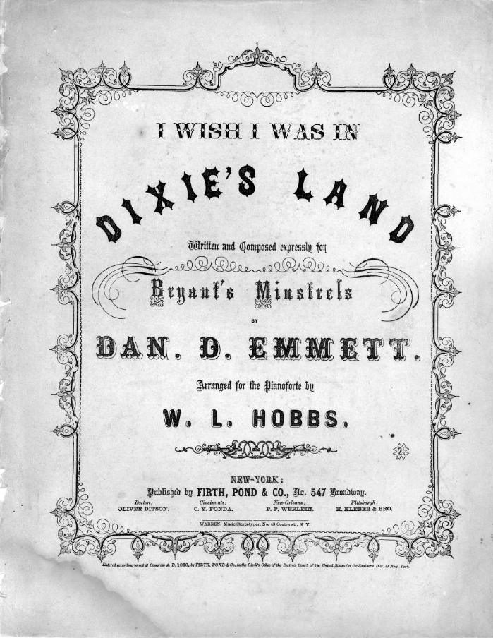

A historian reads the outside of a document first: who made it, where, when, and for whom. Sheet music prints all of that right on the cover. Read this one like evidence, not decoration.

Now the inside. Play the excerpt and read the chorus. A historian asks not just “what does it say” but “what is it trying to make me feel, and believe?”
“I wish I was in the land of cotton, / Old times there are not forgotten; / Look away! Look away! Look away! Dixie Land.”
Historians corroborate — they line sources up against each other. Here are two you can compare by ear. They share the exact same melody. Play both.
“John Brown’s body lies a-mould’ring in the grave … his soul is marching on. Glory, glory, hallelujah!”
“Mine eyes have seen the glory of the coming of the Lord; / He is trampling out the vintage where the grapes of wrath are stored.”
“The Battle Cry of Freedom” was the North’s great rallying song — and the Confederacy liked the tune so much it wrote its own Southern words to the very same melody.
“The Union forever! Hurrah, boys, hurrah! / Down with the traitor, up with the star!”
Time to argue like a historian: a claim, the evidence for it, and your reasoning. Here is the real question our class faced in building this unit:
“Dixie” began as a blackface minstrel song and became the Confederate anthem. Should a U.S. history class study it — play it, even — or leave it out? Make your case.